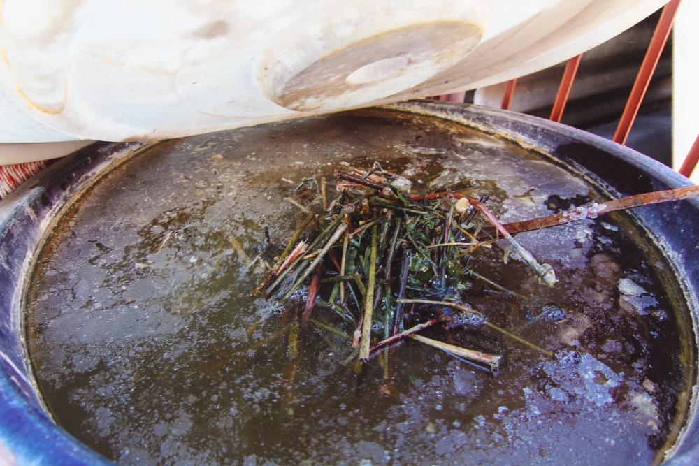

01
苍山脚下，
ABOUT THIS PLACE
苍山脚下，
这座城的故事。
先看一双手怎样把线缝进布里，再看蓝如何在空气里慢慢显出来。
点击左侧任务
解锁实景
解锁实景
非
遗
达
人
恭喜你解锁了【寻蓝】全部打卡！
PLANT DYE / 板蓝根
这抹蓝，究竟是哪里来的？
1. 植物的发酵与沉淀
白族扎染的蓝取自板蓝根等植物。村民采摘茎叶，将其浸泡在水中发酵。在这个过程中，植物里的吲哚酚会游离出来。随后加入石灰水（碱性），通过打靛使其沉淀，最终得到深蓝色的“靛泥”。
2. 神奇的氧化还原反应
浸染后的布面刚出缸时，呈现的是黄绿色。这是因为此时的靛蓝处于“隐色体”状态，溶解在染液中。接触空气中的氧气后，它才会慢慢氧化，分子结构改变，最终变成深邃的靛蓝色。
3. 物理防染的东方智慧
那白族花纹是怎么来的？其实原理极其简单：靠“扎”。用线把布紧紧扎起来，被线缚住的地方染液进不去，就留住了布原本的白。拆线后，蓝底白花便如变魔术般显现出来。

刚出缸 (黄绿)
风中氧化
最终显色
黄绿色 · 湿润
PATTERNS & DAILY LIFE
不仅是布，更是白族人的史诗。
扎染纹样进入婚嫁、节庆与日常服饰。蝴蝶纹承载创世想象，梅花纹寄托坚韧，几何连续纹则让布面像一段不断延伸的生活叙事。
👉 互动提示：将鼠标悬停在下方卡片上（或点击），可翻开纹样图鉴，了解其背后的民俗寓意。
LOCAL INDUSTRY
扎染给这里留下了什么？
👥 从业人数
--
人
🏠 经营作坊
--
家
💰 年产值
待调研
数据口径加载中
近五年非遗研学体验人次趋势
数据示意 · 单位：万人次